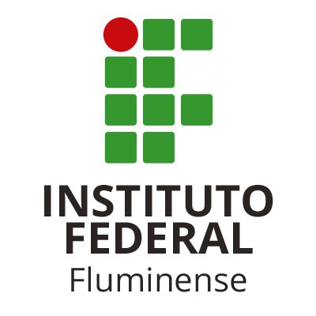
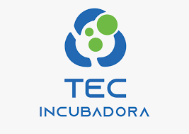
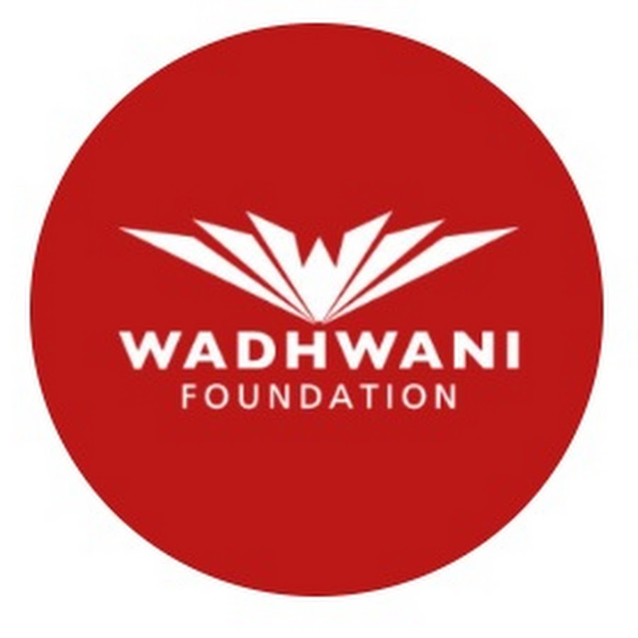

Nossos Parceiros Estratégicos
Conheça as instituições e organizações que colaboram e fortalecem o ecossistema de inovação junto ao GOYTA HUB.

![Logo do ISE - Instituto Superior de Educação sediada em Campos dos Goytacazes. Um retângulo estilizado com a parte de baixo fazendo uma curva e a parte de cima fechando com dois degraus partindo de cada lado e se encontrando ao meio formando o terceiro degrau comum, representando a fachada do primeiro prédio construído no complexo, apresenta fundo azul. No meio do terceiro degrau dentro da figura as letras IHS, em latim Iesus Hominum Salvator ou Jesus Salvador dos Homens. Uma linha na diagonal branca separa a figura, tendo na parte de cima em letras grandes e brancas as iniciais ISE, Instituto Superior de Educação. Embaixo da linha diagonal, no cano superior retângulo e triângulos, simbolizam vitrais da capela. Logo abaixo 3 estrelas interligadas também em branco, simbolizam a Santíssima Trindade: Pai, o Filho e o Espirito Santo.](images/ise.png)

